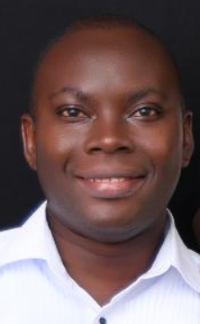

About Me
Hello! My name is Edwin Ewudzie and I am from Ghana. I currently live in Accra and married with three children. I love to be around with my family and love playing the keyboard. As a young man, I served my mission at Nigeria Port-court mission form the year 2005 - 2007. I purseued my education then in BSc. information Technology and I love to continue pursing my education and develope web development skills.

Accra, Ghana
Ghana is beautiful country located in the West Africa of the African contenent. It is rich in mineral reources such as gold, oil, plantation etc. It has a rich culture and the people are more hospital, religious and friendly.